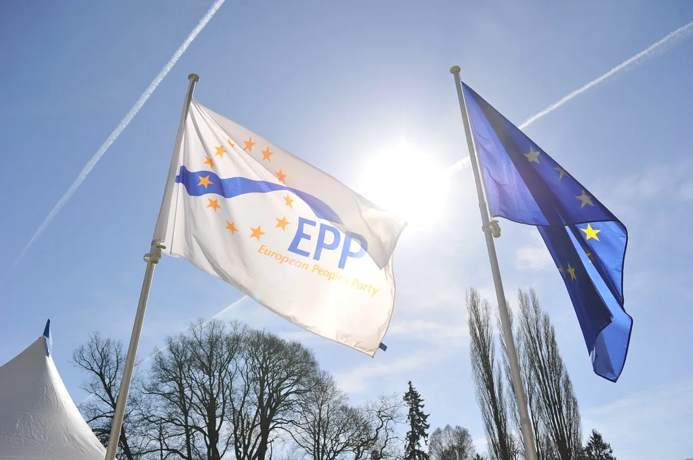
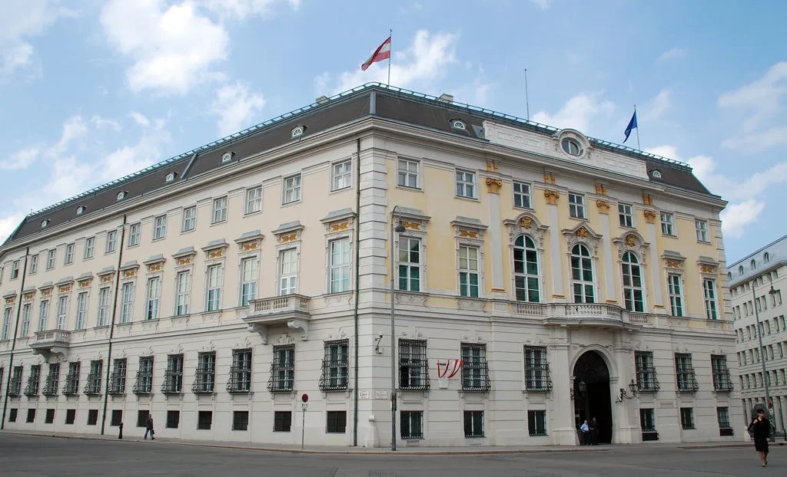

프리드리히 메르츠 독일 총리가 29일부터 이틀간 한국을 공식 방문해 이재명 대통령과 정상회담을 가졌다. 메르츠 총리 취임 이후 첫 방한이며, 독일 총리의 양자 공식 방한으로는 3년 만이다. 이번 방문은 서울에서 열리는 제19회 독일 아시아태평양 비즈니스 컨퍼런스(APK 2026) 참석을 계기로 마련됐으며, 양국이 오랜만에 고위급 채널을 재가동하는 계기로 주목받았다. 독일 총리실은 이번 방문을 아시아 지역 전략 강화의 일환으로 설명하며, 유럽 주요국 정상이 잇따라 아시아를 찾는 흐름 속에서도 한국을 우선 순방지로 택한 점을 부각했다.
이재명 대통령과 메르츠 총리는 29일 오후 정상회담을 갖고, 이어 공동 언론발표와 공식 만찬 일정을 함께했다. 정상회담에 앞서 양측 참모진은 의제 조율을 위해 여러 차례 실무 협의를 거친 것으로 알려졌다. 이 대통령은 메르츠 총리를 향해 "소중한 동반자"라는 표현을 쓰며 환영의 뜻을 밝혔고, 양국이 민주주의와 자유시장경제라는 공통 가치를 공유하는 파트너라는 점을 강조했다.

이번 회담의 핵심 의제는 양국 간 교역·투자 활성화와 더불어 배터리·반도체·인공지능(AI) 등 미래산업 분야 협력이었다. 한국의 메모리 반도체 경쟁력과 독일의 정밀 제조·자동차 산업 기반을 결합해 공급망 협력을 확대하는 방안이 집중적으로 논의됐다. 특히 AI 분야에서는 양국 기업과 연구기관 간 공동 연구 및 인력 교류를 확대할 필요가 있다는 공감대가 형성된 것으로 전해졌다. 독일 완성차 업계가 전기차 전환 과정에서 배터리 핵심 소재 공급망 다변화를 고민해온 만큼, 한국 배터리·소재 기업과의 협력 확대 가능성에도 관심이 쏠린다.
국방·방위산업 협력 강화도 이번 회담의 주요 의제로 다뤄졌다. 양국은 방산 기술 교류와 공동 개발 가능성을 포함해 안보 분야에서의 협력 방안을 논의했으며, 청년과 전문인력 교류를 확대하기 위한 구체적인 프로그램도 테이블에 올랐다. 유럽과 아시아를 잇는 안보·경제 네트워크 속에서 양국의 역할을 넓히려는 시도로 해석된다.

두 정상은 지역 정세와 주요 국제 현안에 대해서도 의견을 나눴다. 유럽과 아시아를 아우르는 다자 협력 체계 속에서 한국과 독일이 각각 핵심 파트너로서 어떤 역할을 할 수 있을지가 논의의 한 축이었던 것으로 전해졌다. 글로벌 공급망 재편이 가속화되는 상황에서 신뢰할 수 있는 우방국 간 협력의 중요성이 커지고 있다는 인식도 공유됐다.
독일 총리의 방한이 한동안 뜸했던 배경에는 양국 모두 정권 교체 등 국내 정치 일정이 맞물려 있었다는 분석이 나온다. 그런 만큼 메르츠 총리가 취임 후 첫 아시아 순방지로 한국을 택한 점은 그 자체로 상징성이 있다는 평가다. 한국과 독일은 그간 제조업 중심 경제구조와 수출 의존도가 높다는 공통점 때문에 종종 서로를 비교 대상으로 삼아왔는데, 이번 방한을 계기로 두 '제조 강국'이 산업 전환기에 어떤 협력 모델을 만들어낼지도 관전 포인트로 꼽힌다.
이번 정상회담을 계기로 양국은 반도체·AI·배터리 등 첨단산업 공급망에서 실질적 협력 성과를 조기에 도출하겠다는 목표를 재확인했다. 재계에서는 이번 방한이 구체적인 투자·기술 협약으로 이어질지 주목하고 있으며, 정부는 후속 실무 협의를 통해 세부 사항을 조율해 나가겠다는 방침을 밝혔다.